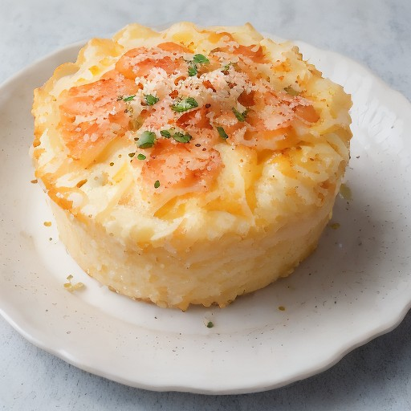

デザート
悪魔的トマトチーズのトマトグラタン風！

完熟トマトとフレッシュモッツァレラが絶妙な相性で、この悪魔的な味わいはチーズ好きを魅了します。
💡 こんな時・こんな人におすすめ！
特別な日に、特別な味を！
📋 必要な材料（ポストイット風）
材料リスト 1
- 完熟トマト2個
- フレッシュモッツァレラ100g
- 生クリーム200ml
材料リスト 2
- チーズ (エベルク・チーズ)50g
- パセリ (みじん切り)1/2カップ
🍳 作り方ステップ
1
1. 完熟トマトは皮をむき、種を取り除き、4cm角に切る。
2
2. 生クリームとチーズを混ぜ合わせる。
3
3. 4cm角に切ったトマトを、生クリームチーズの溶き混ぜたものを包み込み、チーズをふりかける。
4
4. パセリを加え、オーブンで180℃で20分焼く。
5
5. 冷まして完成